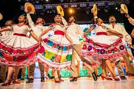

Cómo es la cultura de Hidalgo
👣 1. La Gente de Hidalgo Hidalgo es un estado con una rica diversidad cultural. Está habitado por varios grupos étnicos, principalmente: OtomÃes (hñähñu) Tepehuas Náhuatl Estas comunidades han conservado sus tradiciones, lengua y vestimenta por siglos. También hay población mestiza en ciudades como Pachuca y Tulancingo.
👗 Trajes TÃpicos de Hidalgo 👩‍🌾 1. Traje TÃpico Otomà (Región del Valle del Mezquital) Mujeres: Falda larga de manta blanca o negra con bordados coloridos. Blusa de manta con bordados florales o animales (como venados o aves). Rebozo azul, negro o gris. Llevan huaraches y trenzas adornadas con listones. Hombres: Pantalón y camisa de manta. Faja de lana tejida a mano. Sombrero de palma. A veces usan jergas o sarapes de lana en climas frÃos.
🧥 2. Traje de Fiesta Tradicional Utilizado en fiestas patronales o danzas tradicionales como: Los Xitá (danzantes tradicionales otomÃes). Los huehues o viejos, usados en carnavales. Incluye: Máscaras de madera pintadas a mano. Sombreros decorados con flores y listones. Ropa colorida y adornos de papel o tela.
💃 3. Traje de Huapango Hidalguense (Región Huasteca) Mujeres: Blusa bordada con flores grandes. Falda amplia de colores brillantes. Llevan pañuelo rojo, collares y flores en el cabello. Hombres: Camisa blanca, pantalón blanco, faja roja. Sombrero de palma y botas. A veces usan pañuelos al cuello, tÃpicos de la región huasteca.
🐏 4. Trajes para Danzas Tradicionales Como la danza de los negritos, tlacololeros, moros y cristianos, etc. Los trajes son llamativos, con máscaras, capas y espadas de madera.
🉠Costumbres y Tradiciones de Hidalgo 🙠1. Fiestas Patronales Se celebran en casi todos los municipios para honrar al santo patrono del lugar. Incluyen misas, procesiones, danzas tradicionales, música de banda, juegos pirotécnicos y mucha comida. Ejemplo: La Feria de San Francisco en Pachuca, y la Fiesta de la Virgen de Guadalupe en todo el estado.
💃 2. Danzas Tradicionales Muy presentes en fiestas religiosas y ferias. Algunas importantes: Danza de los Xitá (danza otomà con máscaras y trajes de colores). Danza de los Moros y Cristianos. Danza de los Negritos. Huehues o danzantes de carnaval con máscaras de ancianos.
🌾 3. La Feria del Pulque y el Maguey Se celebra en Apan, Singuilucan y otras regiones pulqueras. Se honra al maguey, una planta sagrada para los pueblos indÃgenas. Hay concursos de pulque, comida tradicional, artesanÃas y música.
🐏 4. La Barbacoa de Horno Preparar barbacoa es casi una ceremonia en sà misma. Se hace en fiestas importantes (bodas, bautizos, aniversarios). Cocinarla bajo tierra, envuelta en pencas de maguey, es una tradición comunitaria y familiar.
📿 5. Los “Topes†Costumbre en pueblos donde la gente va de casa en casa con la imagen de un santo o virgen. Las familias los reciben con comida, rezos y música, como forma de agradecer milagros.
🧺 6. El Trueque En algunas comunidades indÃgenas todavÃa se practica el intercambio de productos en lugar de usar dinero. Muy común en mercados tradicionales, como en Ixmiquilpan o Actopan.
🧵 7. Bordado Otomà Más que una artesanÃa, es una tradición cultural que se transmite de generación en generación. Los bordados coloridos cuentan historias, representan animales, plantas y leyendas. Se usan en ropa, manteles, cojines, etc.
🗣️ 8. Conservación de las Lenguas IndÃgenas Muchas comunidades siguen hablando otomà (hñähñu), náhuatl y tepehua. Se realizan actividades culturales para preservar las lenguas a través de cuentos, rezos y canciones.